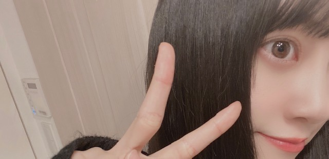

2020/0501Friご
5月ですね
じわりと梅雨に近づいてきてますが
雨の日に聞きたくなる曲や
映画ドラマアニメはなんですか？
教えてください☺︎
私は映像だと
" 恋は雨上がりのように "
" 海街diary "
" 耳をすませば "
" 言の葉の庭 "
は欠かせません!

そしてそして
カップスターさんの企画で
今日から毎月1話ずつ
" 乃木坂毎月劇場 " が公開されていきます!
東京03さんとオークラさん脚本で
やらせていただきました☺︎
ドラマ遊戯みたいにいかない 以来でしたが
やはり楽しい現場でした!
是非見てください☺︎

質問返し
やってみたかったバイトとか
仕事ってありますか？
→バイトはコンビニ、パン屋さん、
和菓子屋さん、ファミレス
仕事は保育士さん、化粧品販売員、
ウエディングプランナー、
芸能事務所の新人育成かな

ブログとかインスタとかにお料理
よく載せてるけど、
いつからお料理始めましたか？
あと、資格とか持ってますか？？
前から気になってたので！
わたしもおうちでみおなちゃん
の真似して作ってみます！
→高校で料理クラブに入ったり
授業で食物検定をとってから
ちゃんとしだしたかなぁ☺︎
中学の時は簡単な和食くらいしか
作れなかったけどお母さんに
教えてもらったりレシピ見ながら
レパートリーを地道に増やしています！笑
最近よく聴く曲教えて！
→ここ1週間で聴いた曲ランキング
そのまま載せますね
1 リッツパーティー / back numberさん
2 Beautiful / Wanna Oneさん
3 晴れた日に... / 久石譲さん
4 星のない世界 / aikoさん
5 最大公約数 / RADWIMPSさん
6 メッセージ / チャットモンチーさん
7 ブルー / フジファブリックさん
8 Blueming / IUさん
9 僕の名前を / back numberさん
10 西藤公園 / back numberさん
次あたりに明るい髪色にしたりしますかね？
→なんだかんだ暗髪気に入っていて...
でも気分で明るくする時もあるかも！
最近あった面白いエピソードは何ですか?
→家族でトランプのダウトをしたときに
お母さんがルール分かってなくて
全部の手持ちのカードを出して
ダウト！って言ったとき。笑
みんなで笑い転げました。笑
外国に住むならどこがいい？
→のんびりとしたヨーロッパがいいなぁ
ニースやコルシカ島に行って、
いつか住みたいなって思ったよ！
髪を染めようと思ってるんだけど
何色がいいと思いますか？男子です！
未央奈の意見を参考にしたいです(^^)
→私好みにしてくれるの？嬉しい♪
なんだかんだ黒髪が1番すきです！
四期生で1番仲良いのは誰？
三期生で1番仲良いのは誰？
→1番とかは無いかなぁ
れんか、しおり、与田ちゃんとは
仕事も一緒なことが多くて
合間に話すくらいかな！
もっとみんなと話したい〜☺︎はなそっと☺︎笑
髪の毛ボサボサのときとかないんですか
→寝癖つきやすくてよくメンバーに
いじられますよ
アーティスティックな寝癖らしい。笑
以上

ハワイで食べたステーキが美味しくて
いまとてもステーキが食べたいです
ではでは
2020/05/01 14:06


コメント(440)
約束します！
毎日仕事大変だけど、堀ちゃんの写真を見て癒されてるよー
梅雨の時期によく聴く曲は
SEKAI NO OWARIさんのRAIN
井上苑子さんのグッデイ
です！
堀ちゃんの2nd写真集楽しみ٩(=゜∀゜)งｴｲｴｲｵｰ☆彡
レコメン!での真佑ちゃんとの絡みも見たいなー
大変な時だけどお互いに体調に気を付けて頑張りき(ง •̀_•́)ง
最近結構更新してくれて、ブログ見る機会増えて嬉しい♡
おすすめのドラマはウロボロス〜この愛こそ正義〜ですね
結構シリアスなドラマですけどかなり面白いんでぜひ見て欲しいっす。よろしくお願いします(๑♡ᴗ♡๑)
ドラマならラスト・フレンズかなー。
いつもこまめにブログ上げてくれてありがとうです。
未央奈がモバメで送ってくれる料理写真を美味しそうだな〜って見てました。
料理って良いよね。
俺も料理好きで結構自分で作ったりしてるけど、なかなかレパートリーが増えないのが悩み。
やりたい料理はいっぱいあるんだけど時間がなくて結局慣れたやつばっかり作っちゃうんだよねw
GWは確実に暇になるからなんか新しいの挑戦しようかな。
ステーキ食べたいのわかるー。
俺もニュージーランドで食べたステーキとかラムが美味しすぎてたまに無性に食べたくなる。
あぁ、肉にかぶりつきたいw
最後のパブの写真いいね
ワイングラスがよくお似合いですよシニョリーナ。
ワイン大好きでこの前6本くらい買いました。
はぁ、散財してしまった。
ま、趣味だから良いんだけどw
貴腐ワインも買ったからゴルゴンゾーラ食べながら飲もうかな。
もちろんBGMはゴルゴンゾーラでw
ちなみに今日はトレーニングしたので飲みたいの我慢しました。
お酒飲むとトレーニングの効果半減するって聞いたことあるので。
夜更かしすると筋肉痛残るのでそろそろ寝ようかな。
それじゃ、Buonanotte,sogni d'oro.
５月の声、聞いたとたんに急に暑くなってきましたが、いかがですか？
５月になっての新企画、カップスターの「乃木坂毎月劇場」、早速見せていただきました。思わず吹き出してしまいました。さくちゃんが必死で笑いをこらえている(こらえきれてないか？)ところや、未央奈のごく自然に出てきた「食レポ口調」、１～４期生そろってのドラマというのもうれしいですね。とんこつ味、おいしそうですね。第２弾も楽しみにしたいと思います。
「ＢＵＢＫＡ」も読みましたよ。「宇宙から来た３人」と「腐らず、流されず、遠慮せず」、懐かしくかつ楽しく読ませていただきました。
というわけで、５月もどうかよろしくお願いいたします。
最後の前髪無いのめっちゃ綺麗です！
カップスターのアドリブのところみんな面白かった！
暇な時間に視聴して、ずっと映像をみるのも飽きてしまうので、読書とかで気を紛らわしています。
更に、読書中に乃木坂の曲を聞いていることもあります。最近はアナスターシャとキスの手裏剣をよく聞いています。
最後の頭にカップスター乗せてるの可愛かったです！
ゴゴゴ…
5月だね。☺︎
梅雨が近づいてきてるのかー
雨の日の曲、映画ドラマアニメ。
おー、さすが。恋は雨上がりのように よき。
曲だったら、乃木坂のMy ruleかなぁ。
雨の日の夜ならback numberさんの瞬き。
映画だったら、となりのトトロとか千と千尋、天気の子かな。雨で気落ちしてて笑いたい気分だったらザ・マジックアワーもいいかも。
アニメだったら四月は君の嘘とか三月のライオンかなぁ。ヒカルの碁もいい。
乃木坂毎月劇場！
東京03さんとの共演！
観たよー。アドリブ部分が結構あるの？それとも自然な反応していいよって言われてるのー？
やっぱり東京03さんおもろいねー！
みおちゃんのレスポンスの早い食レポもよきよき。エンディングで流れてた頭にカップスター載せてる写真が欲しい！！♡
次も楽しみ♪
✌️
いいね！バイトや仕事。
あきらめなければ何にでもなれる。よね？
みおちゃんの料理どれもほんとおいしそうー！って思いながらいつもみてる。
すっごい極論なんだけど食べることは生きること。だと思ってるから料理ができるって素晴らしいこと〜☺️
みおちゃんの聴いた曲♪ 聴く〜
どんな髪色にするのかなー？
これ。笑うわ！！！
ダウト！大笑い
そうだよね、ルールわからないなら、ありうる。笑
ニース！コルシカ島！
写真集でどんな感じなのかチェックしまっす！
おぉー、黒髪が1番好きなんだ。
ほーぅ。メモメモ。(^-^)
あ！今度こっちにも後輩入ってくるかもなんだけど、先輩の作法教えてください〜
先輩風ぶんぶん吹かしてるタイプじゃ、、ないですよね？笑
アーティスティックな寝癖。笑う
ステーキいいなぁー！
食べたい！
おしゃれな写真。みおちゃんきれい。お母さん写真撮るのうまくなってる！笑
ワイングラスでかい。(ルネッサンスできそう)
お、デコだしみおちゃん。かわいい！
ピン留めもおしゃれ。
うん！ではでは。
雨の日に聞きたい曲は、ゆずの雨のち晴レルヤ、サザンオールスターズのはっぴいえんど、福山雅治の虹、とかかなあ。
突然ですが、未央奈ちゃんに質問です!
1、この春から高校生になり、学校は始まっていないなが軽音楽部に入ろうと思っています。ちなみに、楽器はやったことがありません。未央奈ちゃんは好きな楽器、弾ける楽器などありますか？また、軽音楽部の男子は、女子から見てどんな印象なのでしょうか？
教えてください!
最近未央奈さんがハマってる事はなんですか？自分は、散歩の時に川を眺めて鯉を見つけて写真を撮るのにハマってます。写真撮影は自分の趣味なんです！(いや、どうでもいい情報だった……)
いつもブログ更新ありがとう！！！！ﾊﾞｲﾊﾞｲ(ヾ(´・ω・｀)
雨の日には雨をテーマにした曲を聴きたくなりますね
古いですが、森高千里さんの『雨』とか稲垣潤一さんの『ドラマティック・レイン』とか
前髪を上げると雰囲気が変わりますね。
(^_^)v
CRYSTALより。
嵐さんでRainbow,Rain
サザンオールスターズさんでBULE HEAVEN
ドリカムさんで7月7日晴れ
AAAさんでSorry I等です サブスクで全部聞けるものなので是非聞いてみてくださいーーー!!!!
ブログ最後画のデコ出しロング超カワエエ！！！！！！！！！！！！！！！！！！！！！！！
こんばんは
眠れないのでコメントします
梅雨が近づいてますね
雨といえば、俺も恋は雨上がりのようにですね
漫画も読んだし、映画も見たことあります
ありがちな恋愛漫画じゃないから、結構気に入ってます（あきらが可愛いよね）
映画のキャストも役に合ってるから、面白かったです
カップスターのやつ見ました
さくちゃんの慣れてない感じも可愛かったけど、みおなが1番可愛かったです
みおなが突然出てきて、醤油を颯爽と取っていったのに、食べる時はとんこつだったから、面白かったです笑
少し前まで、めっちゃカップスター食べてたけど、飽きたので自粛してます
なぜかって、蓋の裏に書いてある乃木坂サインでみおなが全然出ないのです笑
みおなが出る前に飽きてしまって、気が向いたらまた再開します（カップラーメンばっかりも体によくないので）
しかも俺の住んでる町に売ってるカップスターはなぜか、醤油と味噌しか売ってないから、この2つは暫く大丈夫です笑
逆に、カレーうどん、とんこつが売ってなくて食べた事ないから、今度探してみます（和ラーはちゃんと置いてあるのに）
今は海外行くの無理だけど、早く行けるようになるといいですね
ステーキは500グラムくらいなら、食べられると思います
最後の前髪なしロングの写真はハリウッドみおなだね！
ハリウッドみおな（勝手に命名）好きだから、また出してくれて嬉しいです（オシャレな髪留め2個付きだし）
またブログ待ってます
最近は島の開拓は順調かな？
ありがとうございました
どんな写真でも可愛くて本当に憧れです✨ダイエットの時に未央奈ちゃんの写真を見て元気をもらってます。
1期生とのエピソードあったら教えて欲しいです✨
得意料理とかありますか？
いつもブログありがとう
雨の場面のある映画は”四月物語”が浮かびました。
それで乃木坂毎月劇場みましたよ。その顔触れでやるってだけでめちゃくちゃ嬉しい報せで、その上すぐ見れるとは有り難い事この上ないです。「本っ当に」の間も面白くて、食レポも見事で、醤油じゃなく豚骨を選んだのは譲り合いを想像させられました。
愛を語るところでは、夢中すぎて客観的に言葉にできるような冷静さが無いみたいなことに見えたのですが、それに加えて大喜利そのもののルールを破壊しようとしたようにも見えたのが面白かったです。カップスターへの気持ちをいつか時間が解決してくれたらいいですね。
それにしても毎月更新で堀さんのコメディ演技が見れるだなんて、本当に楽しみが増えました。
モバメの写真もブログの写真もどれも全然雰囲気違くて感心します。色んな面を見せれるのが堀さんらしさなんですね。タイの一枚は額縁に飾りたいくらい美しいです。
では、ステーキ食べて元気に過ごしてくださいね。ブログ更新してくれてありがとうございます。
MUCCの雨のオーケストラです！
是非一度(^-^)
5月早いなあ
雨の日に聴きたくなる曲は
アジカンの雨上がりの希望
Mrs.GreenAppleのumbrella
かな(*^^*)
乃木坂毎月劇場視るね♪
また楽しみが増えました(〃^ー^〃)
お母さん面白い(笑)
想像するだけでほっこりするね♪
明日も未央奈ちゃんにHAPPYを
お休みなさい(^-^ゞ
(*￣∇￣*)(o＾・＾o)v(・∀・*)
まだ5月に入ったばかりですよ‼梅雨入りまで一月以上あるから。ただ五月雨（さみだれ）は村下孝蔵さんの初恋が思い出す位切ない気持ちになりかも⁉
雨降って外気のコロナウィルスも流されきれいになるでしょう‼
(〝⌒∇⌒〝) 写真集も楽しみ❗❗
歌は
マリーゴールド、あいみょん
裸足でSummer、乃木坂46
君がくれた夏、家入レオ
睡蓮花、湘南乃風
SHAMROCK、UVERworld
Songfor、HY
涙そうそう、夏川りみ
天体観測、BUMP OF CHICKEN
TSUNAMI、サザンオールスターズ
です。
映像では
サマーウォーズ
四月は君の嘘これはアニメでも実写版でも両方良かったです。
天気の子
あの日見た花の名前を僕たちは知らない。アニメでも実写版でもとても楽しめる作品です。
世界の中心で愛を叫ぶ
I"sこれはアニメ化されてるのか見てないのでわかりませんが実写版でみたので良かったです。
ホタルノヒカリ
韓国ドラマ
華麗なる遺産
FODオリジナルドラマ
いつか眠りにつく日とか
明日もきっと君に恋をする
ですね。
FODといえば乃木坂シネマズ見てる最中です。
見ててなんか世にも奇妙な物語風だなーって印象です。楽しく見させて頂いてます。
ではまたコメントおじゃまします!
曲はORIGINAL LOVE【月の裏で逢いましょう】かな
5月になったね。あっという間だよ〜
最近は仕事疲れてすぐ寝ちゃうからあまり音楽聴けてないな〜
未央奈のブログは本当に癒しです。
いつもありがとう。
産まれてから1度も髪染めたことないです。未央奈黒髪好きなら染めないでいよ！
では
今日は早く起きてしまった…
昨日だったらすぐにコメントすることが
出来たのに。
僕もスピード重視で頑張ってるんだよ。
だから、手元にスマホがない時に
更新されてた時の絶望感たるや…
かなり病んでますね。
乃木坂毎月劇場を観て純粋に面白いな
と思ったけど、演出でも額縁を活用する
所が他にはなくていいなと感じてた。
勉強不足でドラマをやってたの
知らなくて、じゃあ観てみようと
したら…
こっちが元ネタなんだね。
すごい面白かった。台本考えた人
天才だね。こういうお笑いもあるのか
と勉強になりました。
昨日は言の葉の庭を観ながら
寝たんですが、確かに雨だね。
ジブリ系のものをやんわりと想像
してたけどこっちのが強かったです。
では。
未央奈ちゃん ラプンツェル観ましたか？
ジブリが好きって言ってたけど、ディズニーはどうなんでしょう
2番目に貼っていた黒髪ボブの写真凄く好きです！清楚で透明感があって可愛いです(>_<)♡
1番最後の写真も、いつもの未央奈ちゃんと違う雰囲気な感じがして好きです！自分でイメチェン出来るってかっこよくて素敵だなぁと思います！
素敵な1日になりますように
はなより
道産子として、雨の日に外せないのあった。
松山千春さん『銀の雨』
中島みゆきさん『空と君のあいだに』
今とっさに浮かんできたのが、ドリカムで『晴れたら良いね』っていうの。
1番綺麗だよ
俺は今くらいの明るさの髪色がちょうどいいと思う！
乃木坂46デザインのカップスターを買ったとき
未央奈ちゃんのサイン入りカップ麺フタだったかな。
しかも1回購入して出た
保管してるよ！！
ではでは
いかがお過ごしでしょうか。
まだまだ大変な時期は続きそうですね。
頑張って乗り越えよう！
あ、未央奈ちゃんおすすめの映画や音楽がまた書いてある！！
よし自分もチェックしてみよう！！
(すぐ未央奈ちゃんに影響されます。笑)
ではでは～
乃木坂に加入して一番に仲良くなった
一期生は誰ですか？
いつも可愛くて面白くて最高！
日常が見れて嬉しいよー！
私のオススメの楽曲はキディ(THE KIDDIE)っていうバンドのBeamingという曲です( ´∀`)雨上がりに架かる虹と自分の心情を重ねた楽曲で、ほっこりします
そしてやっぱり最後のお写真の未央奈ちゃんでら可愛いすぎて(;o;)どストライクです(;o;)
慣れないパソコンで打ってますｗ頑張ったのでよんで～～～
～～～～質問～～～～
未央奈ちゃんはパーカーにハマってるそうですがパーカーの時ズボンですか？スカートですか？良ければどんなのかみたいです！！私の参考にしたい！
未央奈ちゃんの座右の銘教えてください。良ければ６文字以内で漢字が入ってるのがいいです！
答えてくれたらほんとにうれしい！！！！
バレッタのセンターに選ばれて色々辛いこととかあったと思うのに負けないで努力していた未央奈を見て私も強くなろうと思いました。
だからこれからも頑張ってください！ずっと応援してます！
質問♪
私も今、陸上部です！未央奈は何の種目でしたか？？教えてくださーい✨
コメントする